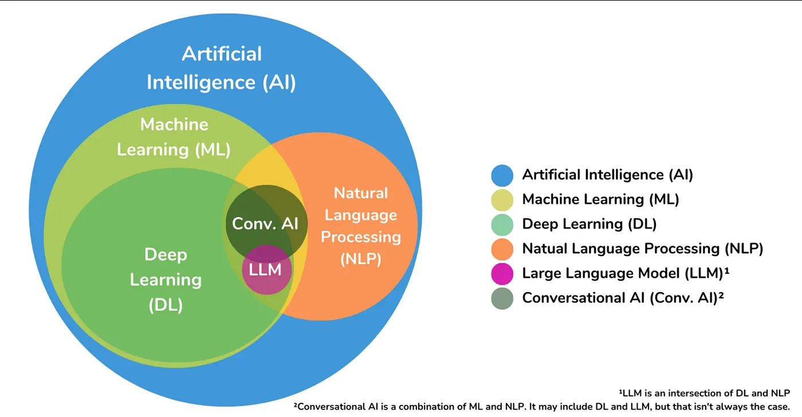

2 The Evolution of Generative Artificial Intelligence and its Application in Academic Research
2.1 1. Introduction to Generative Artificial Intelligence
Generative Artificial Intelligence (GAI) represents one of the most transformative developments in contemporary science and technology.
Its evolution has accelerated significantly since 2018, with the birth of Large Language Models (LLMs) based on the Transformer architecture.
To could find more information about Transformers to these links:
- Introduction to the Transformer
- How Transformers work
Unlike earlier technologies, these models can deeply understand linguistic and conceptual context, generating content that is coherent, well-structured, and often hard to tell apart from what a human might produce.
Its evolution can be schematically articulated through 3 key phases:
- Symbolic AI and supervised machine learning (until ~2010): systems relied on hand-coded rules and labeled datasets. They were effective for specific tasks like prediction or classification but were rigid and hard to adapt to new situations.
- Deep learning and distributed representations (2010–2018): deep neural networks enabled computers to learn hidden patterns in data. This led to major breakthroughs in fields like image recognition, natural language processing, and bioinformatics.
- Autoregressive and multimodal generative AI (2018 onward): Large language models (LLMs) began learning language and concepts from massive text datasets. New models emerged that can handle multiple formats—text, images, audio, and code—at the same time, opening up a wide range of applications.

Source: Medium.
The image shows the relationships between AI, ML, DL, NLP, LLM, and Conversational AI.”*
{kind=link}
Academic research has played a crucial role in this evolution (think of models such as BERT developed by Google Research or T5), but it is also being profoundly impacted methodologically and operationally by these tools.
2.2 2. Current applications and dissemination of GAI in research
GAI is progressively permeating academic workflows, with differentiated uptake across disciplines. Its impact is notable in the following domains:
2.2.1 2.1 Literature conception and review
- Assisting in literature search using specialized AI agents (e.g., Elicit, Scite);
- Generation of exploratory research questions;
- Automatic synthesis of articulated corpora, useful for systematic and narrative reviews.
2.2.2 2.2 Scientific text production and revision
- Preliminary drafting of text sections (e.g., abstract, methodology);
- Automated linguistic revision for non-English speaking authors;
- Controlled rewriting for stylistic adaptation and expository clarity.
Methodological note: Any content generated should always be reviewed and validated, as models may introduce bias, errors or conceptual “hallucinations.”
2.2.3 2.3 Data analysis support and code automation
- Generation of scripts in R, Python, MATLAB from natural language descriptions;
- Help in preliminary interpretation of results (e.g., graphs, output of statistical models);
- Simulation of scenarios or data transformation via NLP-to-code interfaces.
2.2.4 2.4 Dissemination and Communication
- Creation of popular content for websites, presentations, infographics;
- Linguistic and multilingual adaptation of materials for different audiences;
- Assistance in preparing grant, pitch or open access articles.
2.2.5 2.5 Diffusion and acceptance in the academic context
The adoption of generative AI is now heterogeneous across disciplines.
- Widely adopted in computational sciences, engineering, computational linguistics, biomedicine;
- In exploratory stage in the social sciences and humanities, with increasing experimentation;
- Still being debated in high-end journals, especially in relation to authorship attribution and transparency of use.
Many universities are developing internal guidelines to regulate its use, in parallel with an evolving ethical and regulatory framework.
2.2.5.0.1 The introduction of generative AI into research is not neutral. It requires a rethinking of methodological skills as well as an updating of scientific ethics.Researchers are called to develop:
2.2.5.0.2 - Prompt engineering skills, or the art of formulating effective and replicable input;*
2.2.5.0.3 - Ability to critically evaluate generated content, to identify errors, omissions and bias;
2.2.5.0.4 - Awareness of epistemological limitations: AI generates plausible content, but does not verify the truth of claims;
2.2.5.0.5 - Transparent documentation of tool use, useful for reproducibility.*
2.3 4. Adoption of new research methodologies
GAI also enables novel experimental paradigms:
- Language-driven conceptual simulations;
- Automated meta-analyses of scientific literature;
- Multimodal encoding and decoding (text, image, numerical data) to represent complex phenomena.
When employed responsibly, generative AI does not replace scientific inquiry, but amplifies its reach and efficiency.